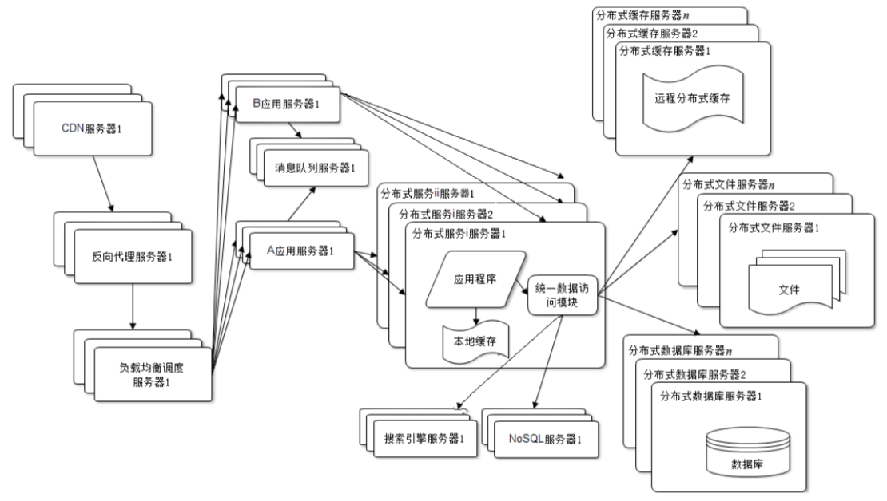
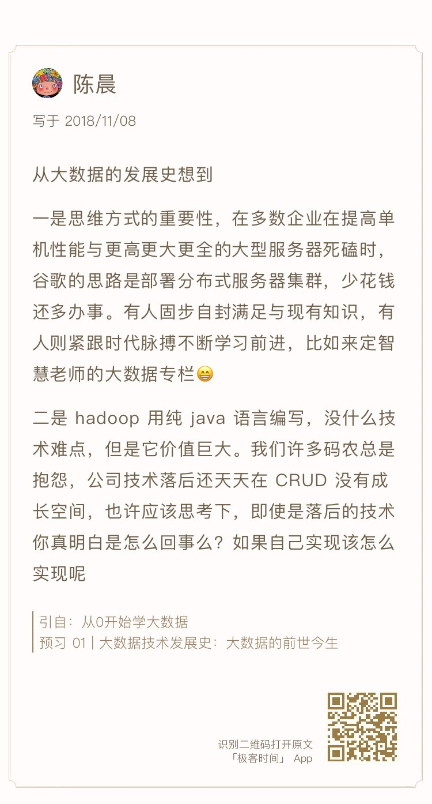

- 00 开篇词 为什么说每个软件工程师都应该懂大数据技术？.md.html
- 01 大数据技术发展史：大数据的前世今生.md.html
- 02 大数据应用发展史：从搜索引擎到人工智能.md.html
- 03 大数据应用领域：数据驱动一切.md.html
- 04 移动计算比移动数据更划算.md.html
- 05 从RAID看垂直伸缩到水平伸缩的演化.md.html
- 06 新技术层出不穷，HDFS依然是存储的王者.md.html
- 07 为什么说MapReduce既是编程模型又是计算框架？.md.html
- 08 MapReduce如何让数据完成一次旅行？.md.html
- 09 为什么我们管Yarn叫作资源调度框架？.md.html
- 10 模块答疑：我们能从Hadoop学到什么？.md.html
- 11 Hive是如何让MapReduce实现SQL操作的？.md.html
- 12 我们并没有觉得MapReduce速度慢，直到Spark出现.md.html
- 13 同样的本质，为何Spark可以更高效？.md.html
- 14 BigTable的开源实现：HBase.md.html
- 15 流式计算的代表：Storm、Flink、Spark Streaming.md.html
- 16 ZooKeeper是如何保证数据一致性的？.md.html
- 17 模块答疑：这么多技术，到底都能用在什么场景里？.md.html
- 18 如何自己开发一个大数据SQL引擎？.md.html
- 19 Spark的性能优化案例分析（上）.md.html
- 20 Spark的性能优化案例分析（下）.md.html
- 21 从阿里内部产品看海量数据处理系统的设计（上）：Doris的立项.md.html
- 22 从阿里内部产品看海量数据处理系统的设计（下）：架构与创新.md.html
- 23 大数据基准测试可以带来什么好处？.md.html
- 24 从大数据性能测试工具Dew看如何快速开发大数据系统.md.html
- 25 模块答疑：我能从大厂的大数据开发实践中学到什么？.md.html
- 26 互联网产品 + 大数据产品 = 大数据平台.md.html
- 27 大数据从哪里来？.md.html
- 28 知名大厂如何搭建大数据平台？.md.html
- 29 盘点可供中小企业参考的商业大数据平台.md.html
- 30 当大数据遇上物联网.md.html
- 31 模块答疑：为什么大数据平台至关重要？.md.html
- 32 互联网运营数据指标与可视化监控.md.html
- 33 一个电商网站订单下降的数据分析案例.md.html
- 34 A_B测试与灰度发布必知必会.md.html
- 35 如何利用大数据成为“增长黑客”？.md.html
- 36 模块答疑：为什么说数据驱动运营？.md.html
- 37 如何对数据进行分类和预测？.md.html
- 38 如何发掘数据之间的关系？.md.html
- 39 如何预测用户的喜好？.md.html
- 40 机器学习的数学原理是什么？.md.html
- 41 从感知机到神经网络算法.md.html
- 42 模块答疑：软件工程师如何进入人工智能领域？.md.html
- 所有的不确定都是机会——智慧写给你的新年寄语.md.html
- 第2季回归丨大数据之后，让我们回归后端.md.html
- 结束语 未来的你，有无限可能.md.html
- 捐赠
10 模块答疑：我们能从Hadoop学到什么？
你好，我是李智慧。专栏的模块一已经更新完毕，按照计划，今天是我们答疑的时间。首先要感谢订阅专栏的同学给我留言，每条留言我都看过了，有些留言对我的启发也很大，希望同学们可以多多跟我互动。我在每个模块都设置了一个答疑的主题，想跟你聊聊我在学习这个模块时的心得体会。另外，我也会贴出一些同学的疑问，跟你聊聊我的想法。
今天的主题是：我们能从Hadoop学到什么？
最近几年，我跟很多创业者交流，发现创业最艰难的地方，莫过于创业项目难以实现商业价值。很多时候技术实现了、产品做好了，然后千辛万苦做运营，各种补贴、各种宣传，但是用户就是不买账，活跃差、留存低。
很多时候，我们不是不够努力，可是如果方向错了，再多努力似乎也没有用。阿里有句话说的是“方向对了，路就不怕远”，雷军也说过“不要用你战术上的勤奋，掩盖你战略上的懒惰”。这两句话都是说，要找好方向、找准机会，不要为了努力而努力，要为了目标和价值而努力。而王兴则更加直言不讳：“很多人为了放弃思考，什么事情都干得出来”。
说了那么多，我们再回过来看看Hadoop的成长历程。从2004年Google发表论文，到2008年Hadoop成为Apache的开源项目，历时4年。当时世界上那么多搜索引擎公司似乎都对这件事熟视无睹，Yahoo、百度、搜狐（是的，搜狐曾经是一家搜索引擎公司），都任由这个机会流失。只有Doug Cutting把握住机会，做出了Hadoop，开创了大数据行业，甚至引领了一个时代。
所以，我们能从Hadoop中学到的第一个经验就是识别机会、把握机会。有的时候，你不需要多么天才的思考力，也不需要超越众人去预见未来，你只需要当机会到来的时候，能够敏感地意识到机会，全力以赴付出你的才智和努力，就可以脱颖而出了。
结合大数据来说，虽然大数据技术已经成熟，但是和各种应用场景的结合正方兴未艾，如果你能看到大数据和你所在领域结合的机会，也许你就找到了一次出人头地的机会。
另一方面，你看一下Hadoop几个主要产品的架构设计，就会发现它们都有相似性，都是一主多从的架构方案。HDFS，一个NameNode，多个DataNode；MapReduce 1，一个JobTracker，多个TaskTracker；Yarn，一个ResourceManager，多个NodeManager。
事实上，很多大数据产品都是这样的架构方案：Storm，一个Nimbus，多个Supervisor；Spark，一个Master，多个Slave。
大数据因为要对数据和计算任务进行统一管理，所以和互联网在线应用不同，需要一个全局管理者。而在线应用因为每个用户请求都是独立的，而且为了高性能和便于集群伸缩，会尽量避免有全局管理者。
所以我们从Hadoop中可以学到大数据领域的一个架构模式，也就是集中管理，分布存储与计算。我在思考题里提出如何利用个人设备构建一个存储共享的应用，很多同学也都提到了类似的架构方案。
最后我想说，使用Hadoop，要先了解Hadoop、学习Hadoop、掌握Hadoop，要做工具的主人，而不是工具的奴隶，不能每天被工具的各种问题牵着走。最终的目标是要超越Hadoop，打造适合自己业务场景的大数据解决方案。
正好提到了每期文章后留给你的思考题，在这里也分享一下我是如何设置思考题的。
关于思考题，你会发现，我留的思考题很多都是和当期内容没有直接关联的，甚至和大数据无关的。它们或是相似的问题场景，或是有类似的解决思路，或是引申的一些场景。
其实我是希望你在学习大数据的时候，不要仅局限在大数据技术这个领域，能够用更开阔的视野和角度去看待大数据、去理解大数据。这样一方面可以更好地学习大数据技术本身，另一方面也可以把以前的知识都融会贯通起来。
计算机知识更新迭代非常快速，如果你只是什么技术新就学什么，或者什么热门学什么，就会处于一种永远在学习，永远都学不完的境地。前一阵子有个闹得沸沸扬扬的事件，有个程序员到GitHub上给一个国外的开源软件提了个Issue“不要再更新了，老子学不动了”，就是一个典型例子。
如果这些知识点对于你而言都是孤立的，新知识真的就是新的知识，你无法触类旁通，无法利用过往的知识体系去快速理解这些新知识，进而掌握这些新知识。你不但学得累，就算学完了，忘得也快。
所以不要纠结在仅仅学习一些新的技术和知识点上了，构建起你的知识和思维体系，不管任何新技术出现，都能够快速容纳到你的知识和思维体系里面。这样你非但不会惧怕新技术、新知识，反而会更加渴望，因为你需要这些新知识让你的知识和思维体系更加完善。
关于学习新知识我有一点心得体会想与你分享。我在学习新知识的时候会遵循一个5-20-2法则，用5分钟的时间了解这个新知识的特点、应用场景、要解决的问题；用20分钟理解它的主要设计原理、核心思想和思路；再花2个小时看关键的设计细节，尝试使用或者做一个demo。
如果5分钟不能搞懂它要解决的问题，我就会放弃；20分钟没有理解它的设计思路，我也会放弃；2个小时还上不了手，我也会放一放。你相信我，一种真正有价值的好技术，你这次放弃了，它过一阵子还会换一种方式继续出现在你面前。这个时候，你再尝试用5-20-2法则去学习它，也许就能理解了。我学Hadoop实际上就是经历了好几次这样的过程，才终于入门。而有些技术，当时我放弃了，它们再也没有出现在我面前，后来它们被历史淘汰了，我也没有浪费自己的时间。
还有的时候，你学一样新技术却苦苦不能入门，可能仅仅就是因为你看的文章、书籍本身写得糟糕，或者作者写法跟你的思维方式不对路而已，并不代表这个技术有多难，更不代表你的能力有问题，如果换个方式、换个时间、换篇文章重新再看，可能就豁然开朗了。
接下来我们看一下同学们的具体问题。
我的判断是大数据与业务的结合，在每个垂直领域、每个垂直领域的细分领域，将大数据和业务场景结合起来，利用大数据发现新的业务增长点。
对技术人员而言，其实挑战更高了，一方面要掌握大数据的知识，这正是专栏想要输出的；另一方面，要掌握业务知识，甚至得成为业务领域的专家，能发现业务中可以和大数据结合的点，利用大数据和业务结合构建起技术驱动业务的增长点，这需要你在业务中有敏锐的观察力和领悟力。
实时计算的结果一般通过两种方式输出，一个是写入到数据库里，和离线计算的结果组成全量数据供业务使用；一个是通过Kafka之类的实时队列给业务，比如你提到的监控展示。关于大数据怎么和业务结合，我会在专栏第四模块与你讨论，请继续关注。
事实上并不会慢，影响文件读写速度的是磁盘的速度。同样的数据量、同样类型的磁盘，HDFS可以将数据分布在更多的服务器和磁盘上，肯定比单机上的几块磁盘速度更快。
HDFS常用的使用方式是结合MapReduce或者Spark这样的大数据计算框架进行计算，这些计算框架会在集群中启动很多的分布式计算进程同时对HDFS上的数据进行读写操作，数据读写的速度是非常快的，甚至能支撑起Impala这样的准实时计算引擎。
我在专栏第8期留了一个思考题，我看了大家的留言，发现很多同学可能没有意识到互联网处理一个请求的复杂性，这里我来谈谈我的理解。
这个思考题其实并不简单，考察的是一个典型的互联网应用，比如淘宝的架构是怎样的。简化描述下，这个过程是：
首先，一个请求从Web或者移动App上发起，请求的URL是用域名标识的，比如taobao.com这样，而HTTP网络通信需要得到IP地址才能建立连接，所以先要进行域名解析，访问域名解析服务器DNS，得到域名的IP地址。
得到的这个IP地址其实也不是淘宝的服务器的IP地址，而是CDN服务器的IP地址，CDN服务器提供距离用户最近的静态资源缓存服务，比如图片、JS、CSS这些。如果CDN有请求需要的资源就直接返回，如果没有，再把请求转发给真正的淘宝数据中心服务器。
请求到达数据中心后，首先处理请求的是负载均衡服务器，它会把这个请求分发给下面的某台具体服务器处理。
这台具体的服务器通常是反向代理服务器，这里同样缓存着大量的静态资源，淘宝也会把一些通常是动态资源的数据，比如我们购物时经常访问的商品详情页，把整个页面缓存在这里，如果请求的数据在反向代理服务器，就返回；如果没有，请求将发给下一级的负载均衡服务器。
这一级的负载均衡服务器负责应用服务器的负载均衡，将请求分发给下面某个具体应用服务器处理，淘宝是用Java开发的，也就是分发被某个Java Web容器处理。事实上，淘宝在Java Web容器之前，还前置了一台Nginx服务器，做一些前置处理。
应用服务器根据请求，调用后面的微服务进行逻辑处理。如果是一个写操作请求，比如下单请求，应用服务器和微服务之间通过消息队列进行异步操作，避免对后面的数据库造成太大的负载压力。
微服务如果在处理过程中需要读取数据，会去缓存服务器查找，如果没有找到，就去数据库查找，或者NoSQL数据库，甚至用搜索引擎查找，得到数据后，进行相关计算，将结果返回给应用服务器。
应用服务器将结果包装成前端需要的格式后继续返回，经过前面的访问通道，最后到达用户发起请求的地方，完成一次互联网请求的旅程。如果用架构图表示的话，就是下面的样子。

这张图来自我写的《大型网站技术架构：核心原理与案例分析》一书，对互联网实时业务处理感兴趣的同学，欢迎阅读这本书。大数据的数据来源最主要的就是网站数据，了解网站架构对学习大数据、用好大数据也很有帮助。
最后，我在今天的文章里贴了陈晨、虎虎、您的好友William、lyshrine、不求、Panmax、wmg、西贝木土的留言，我认为是比较精彩很有深度的，也把它们分享给你，希望其他同学的思考也能对你有所启发，也欢迎你给我留言与我一起讨论。
-
 -
-
 -
-
 -
-
 -
-
 -
-
 -
-

© 2019 - 2023 Liangliang Lee. Powered by gin and hexo-theme-book.